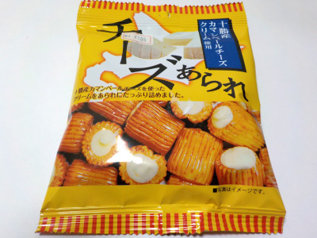

キララの十勝カマンベールチーズあられ
2022/09/24

アラレの中にはカマンベールチーズ風のクリームが入っています。
アラレの方が味が濃いので、あられ味メインでチーズがサブな感じでした。
チーズとあられは相性がいいですね。
この商品はパッケージの感じだとお酒のおつまみですよね。どのお酒にも合いそう。
岐阜県揖斐郡大野町五之里510番地1
2022/09/24

アラレの中にはカマンベールチーズ風のクリームが入っています。
アラレの方が味が濃いので、あられ味メインでチーズがサブな感じでした。
チーズとあられは相性がいいですね。
この商品はパッケージの感じだとお酒のおつまみですよね。どのお酒にも合いそう。